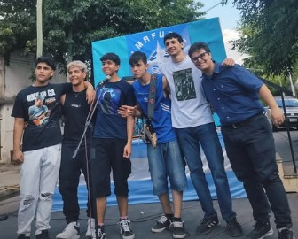
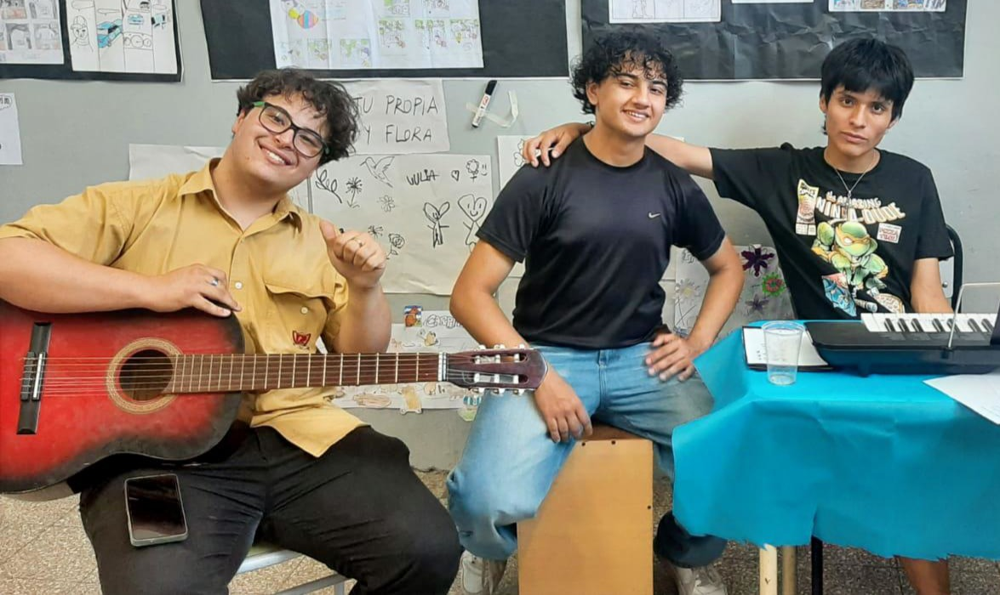
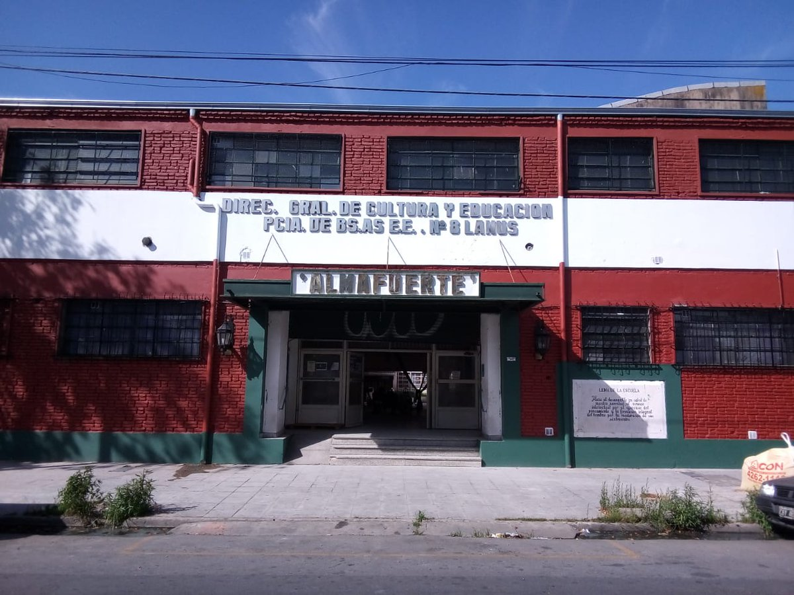
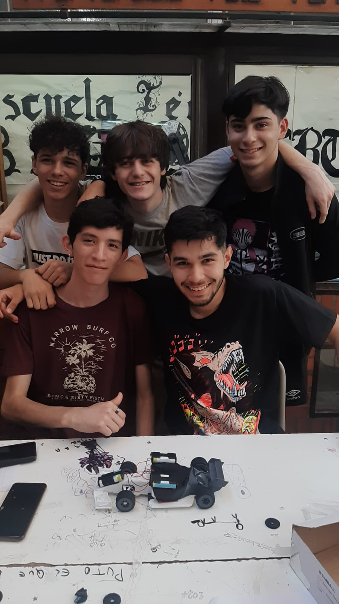
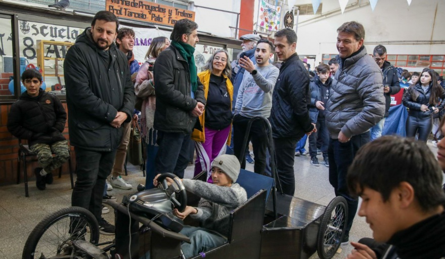
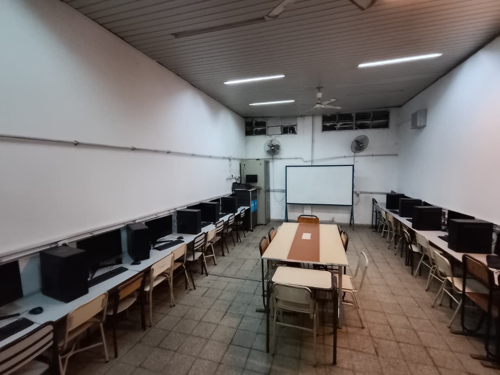
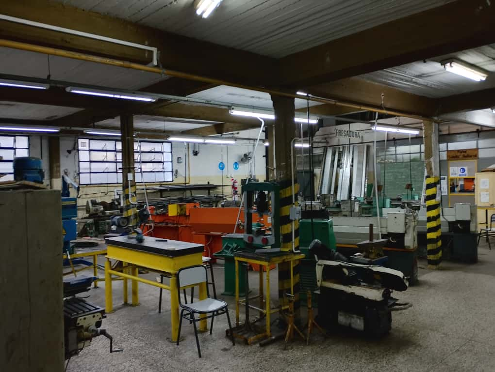
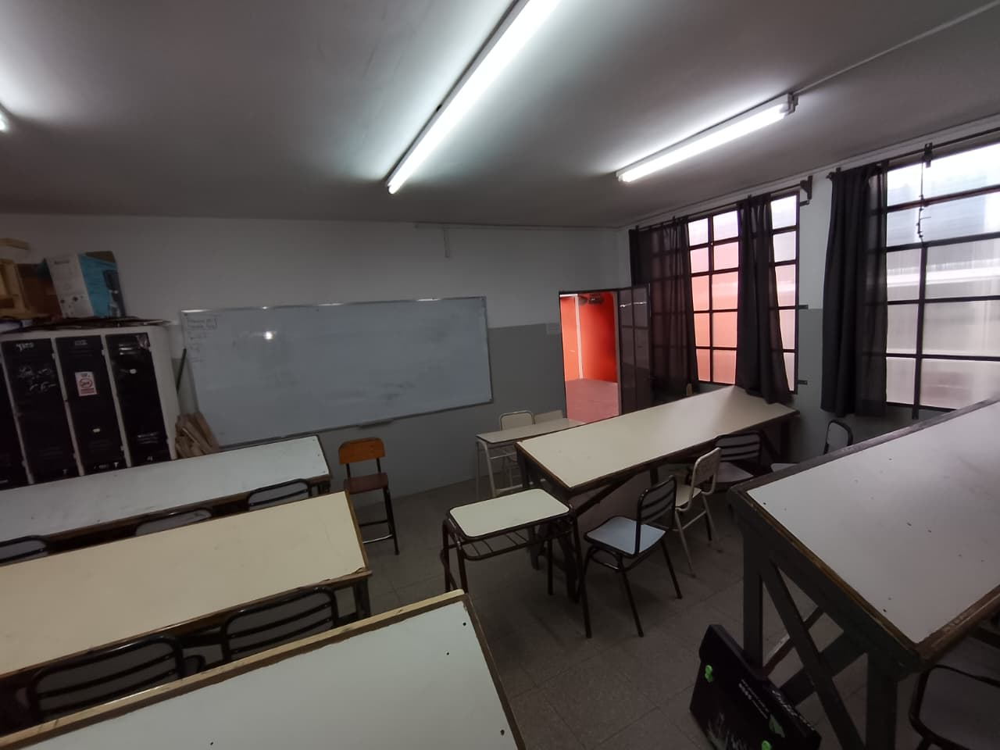

HISTORIA DE LA ESCUELA
La Escuela Técnica Nº 8 “Almafuerte” de Lanús Oeste nació en 1909 como Escuela Nº 42 en Avellaneda y, tras la creación del municipio de
HISTORIA DE LOS DIRECTIVOS
Los directivos de la tecnica secundaria tecnica Almafuerte N°8 fueron:
Itoshi Takeda, Isabel Corrado, Marcela Villalba y Gustavo Mauro. Este ultimo asumió en 2014
EQUIPO DIRECTIVO

NUESTRAS ACTIVIDADES





📍¿Donde estamos ubicados?

INFORMÁTICA
La especialidad brinda una formación integral orientada al perfil de
También se desarrollan habilidades en el armado de equipos y el asesoramiento en la compra de productos y servicios tecnológicos, a partir del análisis de requerimientos y presupuestos. A su vez, los alumnos reciben preparación en el desarrollo o adaptación de programas que complementen funcionalidades de software, con el fin de responder a necesidades específicas del usuario. Un aspecto central de esta orientación es la autogestión profesional, que impulsa al futuro técnico a planificar su tiempo, actualizarse de manera permanente y desenvolverse en forma independiente, actuando como un nexo entre el especialista y el usuario final. De esta manera,
ELECTROMECÁNICA
La especialidad prepara a los estudiantes para desempeñarse como Técnicos del sector Electromecánico, formados en conocimientos, habilidades y valores que les permiten actuar con profesionalidad y responsabilidad social en distintos ámbitos de trabajo. El egresado cuenta con las competencias necesarias para proyectar equipos e instalaciones mecánicas, electromecánicas, neumáticas, oleohidráulicas y eléctricas, incluyendo circuitos de control y automatismos, así como herramientas y dispositivos específicos. Además, posee la capacidad de realizar ensayos de materiales y pruebas eléctricas, mecánicas y electromecánicas, garantizando la calidad y seguridad de los procesos. Su formación incluye la operación de equipos, instalaciones y máquinas herramientas, así como la ejecución de mantenimientos predictivos, preventivos, funcionales y correctivos en componentes y sistemas electromecánicos. También está preparado para montar dispositivos y componentes, instalar líneas de distribución de energía eléctrica de baja y media tensión, y brindar asesoramiento en la selección y comercialización de equipamiento e instalaciones. Esta orientación fomenta el espíritu emprendedor, permitiendo que los egresados puedan generar proyectos propios además de desempeñarse en relación de dependencia en áreas de producción, mantenimiento, desarrollo, gestión o laboratorios.
A lo largo de su trayectoria, el futuro técnico desarrolla la capacidad de interpretar definiciones estratégicas, gestionar y controlar actividades hasta su concreción, siempre teniendo en cuenta criterios de seguridad, impacto ambiental, productividad, calidad y buenas relaciones humanas. De esta manera,


MAESTRO MAYOR DE OBRAS
La especialidad ofrece una formación completa orientada a preparar profesionales capaces de desenvolverse en el ámbito de la